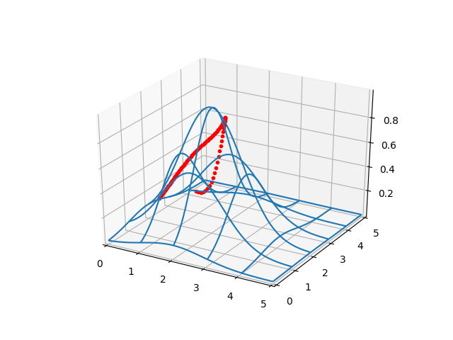
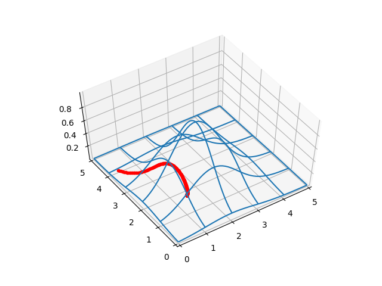
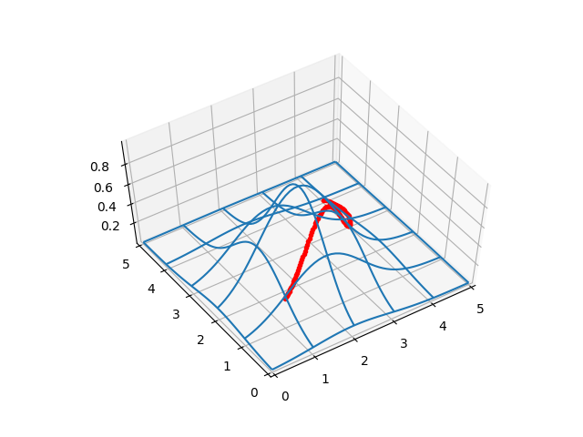
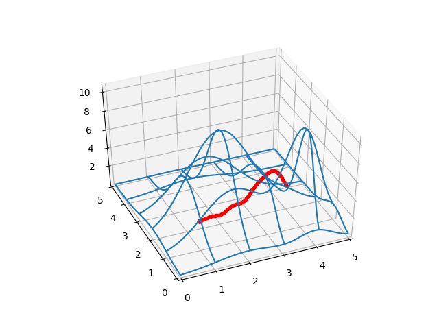
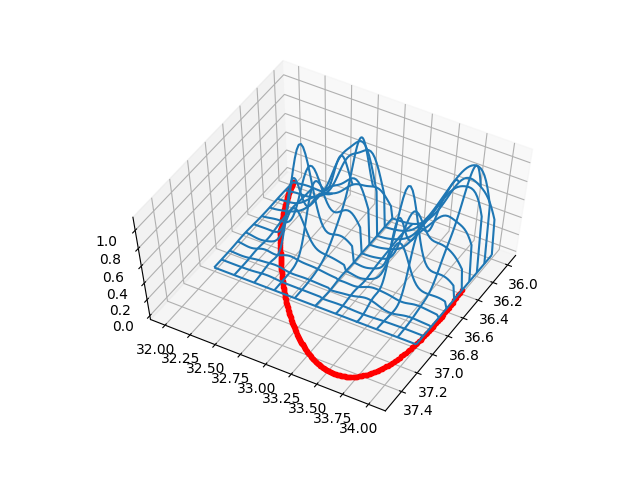

Elimizde bir alan içindeki yükseklikleri veren bir fonksiyon $f(x,y)$ olduğunu düşünelim. Acaba verili bir başlangıç ve bitiş noktası arasındaki en "rahat" gidiş yolunu nasıl buluruz?
Bu problem bir çizgi entegral hesabına çevirilebilir. Bir skalar alan üzerinden giden herhangi bir parametrize eğrinin altındaki alanı hesaplamayı biliyoruz [2]. Ayrıca istediğimiz derecede polinom parametrize eğrileri nasıl yaratacağımızı biliyoruz [3]. Bu fikirleri bir araya koyarsak, geriye kalan bir optimizasyon problemidir. Çünkü en rahat yol, "toplam yüksekliği en az olan yol" olarak görülebilir, ve burada çizgi entegrali faydalı olur.
Önce yükseklikleri ve eğrileri iki örnek üzerinde görelim. Bir rasgele tepe, ve bir rasgele yol çiziyoruz,
from mpl_toolkits.mplot3d import Axes3D
from scipy.spatial.distance import cdist
from matplotlib import cm
def gfunc(x, y):
s1 = 2.2; x1 = 2.0; y1 = 2.0
g1 = np.exp( -4 *np.log(2) * ((x-x1)**2+(y-y1)**2) / s1**2)
return g1
def plot_surf_path(a0,a1,a2,a3,a4,b0,b1,b2,b3,b4):
D = 50
x = np.linspace(0,5,D)
y = np.linspace(0,5,D)
xx,yy = np.meshgrid(x,y)
zz = gfunc(xx,yy)
fig = plt.figure()
ax = fig.gca(projection='3d')
ax.set_xlim(0,5)
ax.set_ylim(0,5)
surf = ax.plot_wireframe(xx, yy, zz,rstride=10, cstride=10)
t = np.linspace(0,1.0,100)
x = a0 + a1*t + a2*t**2 + a3*t**3 + a4*t**4
y = b0 + b1*t + b2*t**2 + b3*t**3 + b4*t**4
ax.plot3D(x, y, gfunc(x,y),'r.')
# 1. gidis yolunun tanimi, uzun yoldan dolanarak gidiyor
a1,a2,a3 = 1.5, 8.1, 4.0
b1,b2,b3 = 0.3, 0.4, 23.3
a0,b0=(1.0,1.0)
ex,ey=(0.3,4.0)
a4 = ex - a0 - (a1+a2+a3)
b4 = ey - b0 - (b1+b2+b3)
test_coefs1 = (a0,a1,a2,a3,a4,b0,b1,b2,b3,b4)
plot_surf_path(a0,a1,a2,a3,a4,b0,b1,b2,b3,b4)
plt.savefig('calc_multi_40_elev_01.png')
Eğer üstteki gidiş yoluna kuşbakışı, iki boyutlu ortamda bakmak istersek,
t = np.linspace(0,1.0,100)
x = a0 + a1*t + a2*t**2 + a3*t**3 + a4*t**4
y = b0 + b1*t + b2*t**2 + b3*t**3 + b4*t**4
plt.xlim(0,5.0)
plt.ylim(0,5.0)
plt.plot(x,y)
plt.savefig('calc_multi_40_elev_02.png')

Şimdi ikinci bir gidiş yoluna bakalım, başlangıç noktası aynı ama bitiş farklı,
# 2. gidis yolunun tanimi, dik cikip iniyor
a1,a2,a3 = 1.5, 3.0, 1.0
b1,b2,b3 = 0.0, 1.0, 1.0
a0,b0=(1.0,1.0)
ex,ey=(0.3,4.0)
a4 = ex - a0 - (a1+a2+a3)
b4 = ey - b0 - (b1+b2+b3)
test_coefs2 = (a0,a1,a2,a3,a4,b0,b1,b2,b3,b4)
plot_surf_path(a0,a1,a2,a3,a4,b0,b1,b2,b3,b4)
plt.savefig('calc_multi_40_elev_03.png')

Bu yolları tabii ki rasgele parametreler üzerinden yarattık, bunlar optimal yollar değiller.
Optimallik için gereken çizgi entegralinin hesabına gelelim. Bu hesap için gereken formül,
$$ \int_{t=0}^{t=1} f(x(t),y(t)) \sqrt{(\mathrm{d} x/\mathrm{d} t)^2 + (\mathrm{d} y/\mathrm{d} t)^2} \mathrm{d} t $$
Formülde görülen $\mathrm{d} x/\mathrm{d} t$ ve $\mathrm{d} y/\mathrm{d} t$ ve bunların karesi, toplamarın kareköku, vs. hesaplarını sembolik olarak altta yapalım,
import sympy
vars = 't a0 a1 a2 a3 b0 b1 b2 b3 gamma x y'
t, a0, a1, a2, a3, b0, b1, b2, b3, gamma, x, y = sympy.symbols(vars)
xdef = a0 + a1*t + a2*t**2 + a3*t**3 + a4*t**4
ydef = b0 + b1*t + b2*t**2 + b3*t**3 + b4*t**4
dxdt = sympy.diff(xdef,t)
print (dxdt)
dydt = sympy.diff(ydef,t)
print (dydt)
sqrtdef = sympy.sqrt(sympy.diff(xdef,t)**2 + sympy.diff(ydef,t))
print (sqrtdef)
a1 + 2*a2*t + 3*a3*t**2 - 57.2*t**3
b1 + 2*b2*t + 3*b3*t**2 - 84.0*t**3
sqrt(b1 + 2*b2*t + 3*b3*t**2 - 84.0*t**3 + (a1 + 2*a2*t + 3*a3*t**2 - 57.2*t**3)**2)
Şimdi entegralin kendisine gelelim. Bu noktada üstteki sembolik programı daha da ilerletip sembolik entegrali almayı deneyebilirdik. Fakat bu işlem oldukca uzun zaman alıyor. Zaten daha ileride daha çetrefil yükseklik fonksiyonları ile çalışmak istersek, o durumda da kullanabilecek bir metota ihtiyacımız var. Burada sayısal entegral almak [1] bir seçenektir. Ama o zaman optimizasyon için gereken gradyan hesabı nasıl olacak diye merak edenler olabilir.. Cevap basit. Otomatik türev yöntemi ile!
Otomatik türev ile herhangi bir fonksiyonun türevini alabileceğimizi biliyoruz [4], eh sayısal entegrasyon da herhangi bir metot olduğuna göre onun türevini alabiliriz. Altta bu hesabı üstteki örnek yollar için görelim,
def trapz(y, dx):
vals = np.nan_to_num(y[1:-1],0)
tmp = np.sum(vals*2.0)
return (y[0]+tmp+y[-1])*(dx/2.0)
def intval(t,a0,a1,a2,a3,a4,b0,b1,b2,b3,b4):
sq = np.sqrt(b1 + 2*b2*t + 3*b3*t**2 - 112.0*t**3 + (a1 + 2*a2*t + 3*a3*t**2 - 65.2*t**3)**2)
x = a0 + a1*t + a2*t**2 + a3*t**3 + a4*t**4
y = b0 + b1*t + b2*t**2 + b3*t**3 + b4*t**4
x = np.array(x)
y = np.array(y)
z = gfunc(x,y)
res = z * sq
T = trapz(res, 1.0/len(t))
return T
t = np.linspace(0,1,100)
a0,a1,a2,a3,a4,b0,b1,b2,b3,b4 = test_coefs1
T = intval(t,a0,a1,a2,a3,a4,b0,b1,b2,b3,b4)
print (T)
a0,a1,a2,a3,a4,b0,b1,b2,b3,b4 = test_coefs2
T = intval(t,a0,a1,a2,a3,a4,b0,b1,b2,b3,b4)
print (T)
1.624956808796678
5.534245013919315
Daha dik yolun entegrali daha yüksek çıktı, bu normal.
Şimdi optimal yolu bulalım,
import pandas as pd
import numpy as np
from scipy import optimize
import matplotlib.pyplot as plt
from mpl_toolkits.mplot3d import Axes3D
from scipy.spatial.distance import cdist
from matplotlib import cm
def trapz(y, dx):
vals = y[1:-1]
vals = vals[vals>0.0]
return (y[0]+np.sum(vals*2.0)+y[-1])*(dx/2.0)
def gfunc(x, y, offset=0.0):
s1 = 2.2; x1 = 2.0; y1 = 2.0
g1 = np.exp( -4 *np.log(2) * ((x-x1)**2+(y-y1)**2) / s1**2)
return g1+offset
def plot_surf_path(azim,elev,a0,a1,a2,a3,a4,b0,b1,b2,b3,b4):
D = 50
x = np.linspace(0,5,D)
y = np.linspace(0,5,D)
xx,yy = np.meshgrid(x,y)
zz = gfunc(xx,yy)
fig = plt.figure()
ax = fig.gca(projection='3d')
ax.set_xlim(0,5)
ax.set_ylim(0,5)
ax.view_init(elev=elev, azim=azim)
surf = ax.plot_wireframe(xx, yy, zz,rstride=10, cstride=10)
t = np.linspace(0,1.0,100)
x = a0 + a1*t + a2*t**2 + a3*t**3 + a4*t**4
y = b0 + b1*t + b2*t**2 + b3*t**3 + b4*t**4
ax.plot3D(x, y, gfunc(x,y),'r.')
def find_path(ex,ey,a0,b0,offset):
cons=({'type': 'ineq','fun': lambda x: 4.0-x[0]}, # y<30
{'type': 'ineq','fun': lambda x: 4.0-x[1]},
{'type': 'ineq','fun': lambda x: 4.0-x[2]},
{'type': 'ineq','fun': lambda x: 4.0-x[3]},
{'type': 'ineq','fun': lambda x: 4.0-x[4]},
{'type': 'ineq','fun': lambda x: 4.0-x[5]},
{'type': 'ineq','fun': lambda x: x[0]}, # y>0
{'type': 'ineq','fun': lambda x: x[1]},
{'type': 'ineq','fun': lambda x: x[2]},
{'type': 'ineq','fun': lambda x: x[3]},
{'type': 'ineq','fun': lambda x: x[4]},
{'type': 'ineq','fun': lambda x: x[5]},
)
# rasgele secilmis baslangic degerleri
a1,a2,a3 = 0,0,0
b1,b2,b3 = 0,0,0
x0 = a1,a2,a3,b1,b2,b3
def pintval(p):
a1,a2,a3,b1,b2,b3 = p
t = np.linspace(0,1.0,100)
a4 = ex - a0 - (a1+a2+a3)
b4 = ey - b0 - (b1+b2+b3)
sq = np.sqrt(b1 + 2*b2*t + 3*b3*t**2 - 112.0*t**3 + (a1 + 2*a2*t + 3*a3*t**2 - 65.2*t**3)**2)
x = a0 + a1*t + a2*t**2 + a3*t**3 + a4*t**4
y = b0 + b1*t + b2*t**2 + b3*t**3 + b4*t**4
x = np.array(x)
y = np.array(y)
z = gfunc(x,y)
res = z * sq
T = trapz(res, 1.0/len(t))
return T
sol = optimize.minimize(pintval,
x0,
method = 'COBYLA',
callback=print,
tol=0.001,
constraints=cons)
print (sol.x)
return sol.x
a0,b0=1.0,1.0
ex,ey=0.3,4.0
res = find_path(ex,ey,a0,b0,offset=0.5)
a1,a2,a3,b1,b2,b3 = res
a4 = ex - a0 - (a1+a2+a3)
b4 = ey - b0 - (b1+b2+b3)
print (a0,a1,a2,a3,a4,b0,b1,b2,b3,b4)
plot_surf_path(-124,58,a0,a1,a2,a3,a4,b0,b1,b2,b3,b4)
#plt.savefig('calc_multi_40_elev_04.png')
plt.show()
ex,ey=4.0,4.0
res = find_path(ex,ey,a0,b0,offset=0.5)
a1,a2,a3,b1,b2,b3 = res
a4 = ex - a0 - (a1+a2+a3)
b4 = ey - b0 - (b1+b2+b3)
print (a0,a1,a2,a3,a4,b0,b1,b2,b3,b4)
plot_surf_path(-124,58,a0,a1,a2,a3,a4,b0,b1,b2,b3,b4)
#plt.savefig('calc_multi_40_elev_05.png')
plt.show()


Ayrıca bir offset parametresiyle yükseklik fonksiyonunun döndürdüğü
her yükseklik hesabına bir offset kadar yüksekliği suni olarak
eklediğimize dikkat. Bunun sebebi yer seviyesinin 0 yükseklikte olması
sebebiyle sürekli tercih edilebilmesi, yani upuzun bir yol yer seviyesinden
gidebilir, çünkü orada gitmenin hiçbir bedeli yoktur. Biz de her yüksekliği
suni bir yükseklik ekleyerek yerdeki çok uzun yolların tercih edilmemesini
sağladık.
RBF Tepeleri
İşleri biraz daha zorlaştıralım. Gerçek dünya şartlarında bir bölgenin
yükseklik verisinden örneklem toplayıp, bu verileri RBF ile modelleyip [6],
o modeli yükseklik için kullanmak isteyebiliriz. Eğer herhangi bir $x,y$
noktasının yüksekliğinin verecek RBF toplam fonksiyonunu temiz bir şekilde
işletmenin yolunu bulabilirsek, bunun üzerinden çizgi entegrali, ve bu
entegral fonksiyonun autoğrad türevi üzerinden minimizasyonunu
yapabiliriz.
Hatta daha da zorlaştıralım, gerçek dünya şartlarında coğrafik kordinatları da parçalara bölüp her parça üzerinde RBF modellemesi yapmak gerekebilir. Diyelim ki kordinatları tam sayı bazında bölüyoruz, mesela tüm enlem/boylam (36,32) kordinatları bir blok (Alanya çevresi), (36,33) bir başka blok. Her tam sayılı alan yaklaşık 9,300 $km^2$'ye tekabül eder. Bu yeterince büyük bir alan, oradaki tepeleri modellemek ise yarar. Her neyse, diyelim ki bir hesap için (36,32), ve (36,33) RBF'lerini bir sözlük içine alıyoruz, ve bu iki RBF bloğu üzerinden optimizasyonun olmasını sağlayalım.
Test amaçlı bir blok içinde iki tepe yaratalım, sonra aynı tepeleri bir başka blok içinde yaratacağız, ve ikisini yanyana koyacağız.
from scipy import optimize
from mpl_toolkits.mplot3d import Axes3D
from matplotlib import cm
np.random.seed(0)
S = 50
D = 100
def func1(x, y):
s1 = 0.2; x1 = 36.5; y1 = 32.5
s2 = 0.4; x2 = 36.1; y2 = 32.8
g1 = np.exp( -4 *np.log(2) * ((x-x1)**2+(y-y1)**2) / s1**2)
g2 = np.exp( -2 *np.log(2) * ((x-x2)**2+(y-y2)**2) / s2**2)
return g1 + g2
def func2(x, y):
s1 = 0.2; x1 = 36.5; y1 = 33.5
s2 = 0.4; x2 = 36.1; y2 = 33.8
g1 = np.exp( -4 *np.log(2) * ((x-x1)**2+(y-y1)**2) / s1**2)
g2 = np.exp( -2 *np.log(2) * ((x-x2)**2+(y-y2)**2) / s2**2)
return g1 + g2
def create_rbfi_hills(latint,lonint):
x = np.linspace(latint,latint+1,D)
y = np.linspace(lonint,lonint+1,D)
xx,yy = np.meshgrid(x,y)
from scipy.interpolate import Rbf
xx = xx.reshape(D,D)
yy = yy.reshape(D,D)
if lonint==32:
zz = func1(xx,yy)
if lonint==33:
zz = func2(xx,yy)
idx = np.random.choice(range(D*D),S)
xr = xx.reshape(D*D)[idx].reshape(S,1)
yr = yy.reshape(D*D)[idx].reshape(S,1)
zr = zz.reshape(D*D)[idx].reshape(S,1)
rbfi = Rbf(xr,yr,zr,function='gaussian',epsilon=0.15)
return rbfi
edict = {}
edict[(36,32)] = create_rbfi_hills(36,32)
edict[(36,33)] = create_rbfi_hills(36,33)
def dist_matrix(X, Y):
sx = np.sum(X**2, 1)
sy = np.sum(Y**2, 1)
D2 = sx[:, np.newaxis] - 2.0*X.dot(Y.T) + sy[np.newaxis, :]
D2[D2 < 0] = 0
D = np.sqrt(D2)
return D
def gaussian(r,eps): return np.exp(-(r/eps)**2)
def f_interp(x,y,rbfi,offset=0):
newp = np.array([[x,y]])
nodes = rbfi.nodes.reshape(1,len(rbfi.nodes))
newp_dist = dist_matrix(newp, rbfi.xi.T)
res = np.dot(gaussian(newp_dist, rbfi.epsilon), nodes.T)
res = np.float(res[[0]])
return res+offset
def rbfi_combo(x,y,offset=0):
xint = int(x)
yint = int(y)
rbfi = edict.get((xint,yint))
if not rbfi: return 0.0
return f_interp(x,y,rbfi,offset)
x = np.linspace(36,37,D)
y = np.linspace(32,34,D)
xx,yy = np.meshgrid(x,y)
zz = [rbfi_combo(xxx,yyy) for xxx,yyy in zip(xx.flatten(),yy.flatten())]
zz = np.array(zz).reshape(D,D)
fig = plt.figure()
ax = fig.gca(projection='3d')
ax.view_init(elev=60, azim=30)
surf = ax.plot_surface(xx, yy, zz, cmap=cm.coolwarm)
plt.savefig('calc_multi_40_elev_06.png')

Şimdi çizgi entegrali hesabı ve optimizasyon için gerekli rutinleri
yazalım, ve bir başlangıç noktası (36.0,32.0)'dan
(36.4,34.0)'a giden optimal yolu bulmaya çalışalım.
def trapz(y, dx):
vals = np.nan_to_num(y[1:-1],0)
tmp = np.sum(vals*2.0)
return (y[0]+tmp+y[-1])*(dx/2.0)
def intval(t,a0,a1,a2,a3,a4,b0,b1,b2,b3,b4):
sq = np.sqrt(b1 + 2*b2*t + 3*b3*t**2 - 112.0*t**3 + \
(a1 + 2*a2*t + 3*a3*t**2 - 65.2*t**3)**2)
x = a0 + a1*t + a2*t**2 + a3*t**3 + a4*t**4
y = b0 + b1*t + b2*t**2 + b3*t**3 + b4*t**4
x = np.array(x)
y = np.array(y)
z = [rbfi_combo(xxx,yyy) for xxx,yyy in zip(x,y)]
res = z * sq
T = trapz(res, 1.0/len(t))
return T
def find_path(ex,ey,a0,b0):
cons=({'type': 'ineq','fun': lambda x: 4.0-x[0]}, # y<30
{'type': 'ineq','fun': lambda x: 4.0-x[1]},
{'type': 'ineq','fun': lambda x: 4.0-x[2]},
{'type': 'ineq','fun': lambda x: 4.0-x[3]},
{'type': 'ineq','fun': lambda x: 4.0-x[4]},
{'type': 'ineq','fun': lambda x: 4.0-x[5]},
{'type': 'ineq','fun': lambda x: x[0]}, # y>0
{'type': 'ineq','fun': lambda x: x[1]},
{'type': 'ineq','fun': lambda x: x[2]},
{'type': 'ineq','fun': lambda x: x[3]},
{'type': 'ineq','fun': lambda x: x[4]},
{'type': 'ineq','fun': lambda x: x[5]},
)
# baslangic degerleri
a1,a2,a3 = 3,2,1
b1,b2,b3 = 1,2,3
x0 = a1,a2,a3,b1,b2,b3
def pintval(p):
a1,a2,a3,b1,b2,b3 = p
t = np.linspace(0,1,100)
a4 = ex - a0 - (a1+a2+a3)
b4 = ey - b0 - (b1+b2+b3)
sq = np.sqrt(b1 + 2*b2*t + 3*b3*t**2 - 112.0*t**3 + (a1 + 2*a2*t + 3*a3*t**2 - 65.2*t**3)**2)
x = a0 + a1*t + a2*t**2 + a3*t**3 + a4*t**4
y = b0 + b1*t + b2*t**2 + b3*t**3 + b4*t**4
x = np.array(x)
y = np.array(y)
z = np.array([rbfi_combo(xxx,yyy,offset=2.0) for xxx,yyy in zip(x,y)])
res = z * sq
T = trapz(res, 1.0/len(t))
return T
sol = optimize.minimize(pintval,
x0,
method = 'COBYLA',
tol=0.00001,
constraints=cons)
return sol.x
a0,b0=(36.0,32.0)
ex,ey=(36.4,34.0)
res = find_path(ex,ey,a0,b0)
print (res)
[1.93790581 1.18886277 2.05012843 0.73404354 1.79221447 2.97475768]
Bir yol bulundu. Grafikleyelim,
a1,a2,a3,b1,b2,b3 = res
a4 = ex - a0 - (a1+a2+a3)
b4 = ey - b0 - (b1+b2+b3)
t = np.linspace(0,1.0,100)
xl = a0 + a1*t + a2*t**2 + a3*t**3 + a4*t**4
yl = b0 + b1*t + b2*t**2 + b3*t**3 + b4*t**4
zl = [rbfi_combo(xxx,yyy) for xxx,yyy in zip(xl,yl)]
fig = plt.figure()
ax = fig.gca(projection='3d')
ax.view_init(elev=60, azim=30)
strides = 10
surf = ax.plot_wireframe(xx, yy, zz,rstride=strides, cstride=strides)
ax.plot3D(xl, yl, zl,'r.')
plt.savefig('calc_multi_40_elev_07.png')

Kaynaklar
[1] Bayramlı, Sayısal Bilim, Sayısal Entegrasyon (Numerical Integration)
[2] Bayramlı, Cok Boyutlu Calculus, Ders 19, Skalar Alanlar Uzerinden Cizgi Entegral
[3] Bayramlı, Cok Boyutlu Calculus, Ders 5, İki Nokta Arasında Parametrize Edilmiş Eğri
[4] Bayramlı, Bilgisayar Bilim, Yapay Zeka, Otomatik Türev Almak
[6] Bayramlı, İstatistik ve Veri Analizi, Dairesel Baz Fonksiyonları (Radial Basis Functions -RBF-)